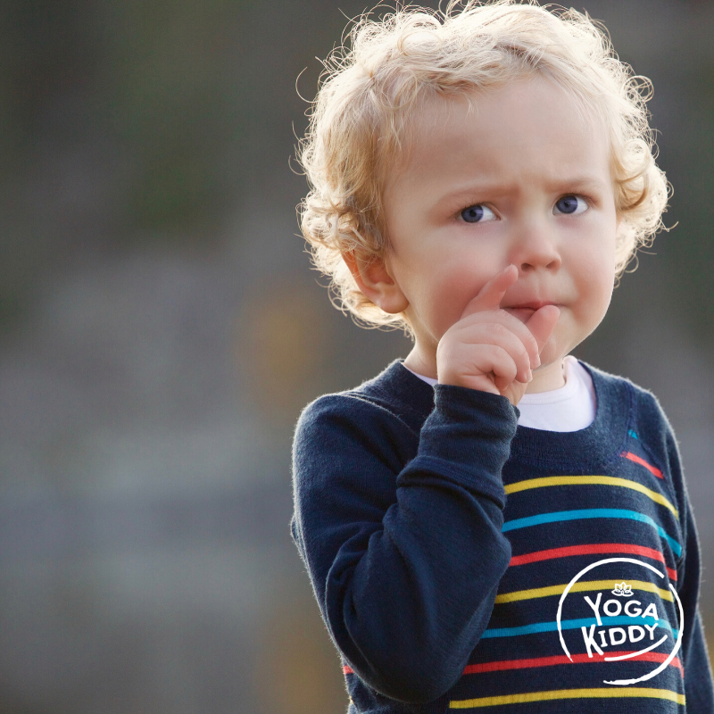

La infancia y el mundo necesitan que surjan preguntas, las cuales nacen desde nuestras profundidades y hablan de las particularidades en la configuración de cada ser.
Nuestros niños y niñas merecen que les propiciemos experiencias para potenciar la capacidad de analizar el presente, pudiendo profundizar en diversas áreas que nos permitirán avanzar en nuestro proceso evolutivo como ser humano y como sociedad.
El pensamiento crítico, según José C. Ruiz es la manera de entendernos a nosotros/as mismos, a los demás y al mundo. Es el utensilio que trae nuestro adn para saber interpretarnos a nosotros mismos, a los otros y a las circunstancia que nos configuran.
Es por esto que nuestra labor es buscar y facilitar estrategias para promover el pensamiento crítico en lo cotidiano, y así fomentar sus capacidades analíticas, amplificándolas y confiando en ellas. La trascendencia de esto, radica en poder interiorizarlo para así instaurarlo como una manera de mirar el mundo, una forma de comprender lo que nos rodea.
Todos los niños y todas las niñas son filósofos/as, traen consigo el germen filosófico de manera innata, capacidades que comienzan a desaparecer con el proceso de crecimiento y maduración de una sociedad que lo que menos busca y le interesa es preservar dicha magia del pensamiento y olear en sus profundidades.
El navegar en aquellas profundidades nos invita a asombrarnos, a curiosear, a cuestionar y por sobre todo nos permite indagar en el arte de hacerse preguntas. Esta acción de preguntar y de preguntarse, nos despierta la cautivante capacidad de análisis, analizar lo que es y lo que aparenta ser, reflexionando sobre lo que pensamos que somos, lo que vemos que somos y lo que realmente somos.
Desde este lugar de analizar nuestro interior, podemos observar y examinar el exterior, siendo capaces de distinguir lo que podemos aportar y con qué podemos colaborar para co-crear un mundo digno para todos y todas.
Observar las situaciones desde diversas perspectivas… dejando de lado el juicio…
¿Cómo hacerlo?
Indagar sobre las causas de las cosas y efectos de las cosas.
Ejemplo: Trabajarlo mediante la ejecución de posturas de equilibrio, descubriendo el secreto para poder mantenerla más tiempo. La causa de no poder sostenerla, podría ser quizás no haber identificado un “drishti”, que es el fijar la mirada en un punto determinado, teniendo como efecto la no posibilidad de mantener el equilibrio en el asana.
Fomentar el conocimientos de sus pensamientos y emociones sin darle un juicio, reconociéndolos y aceptándolos.
Ejemplo: “El colgadero del Yoga”. Mediante la creación de elementos de vestimenta, tales como poleras, pantalones, polerones, etc… (Cada uno/a elige la manera de hacerlo), les pedimos a los niños y niñas, que escriban en sus prendas lo que piensan y sienten el día de hoy para posteriormente llevar al colgadero todas sus ropas para observar las suyas y la de todos sus compañeros y compañeras.
Elaborar conclusiones de diversas situaciones cotidianas.
Enseñar a dudar, frente a toda posibilidad de realidad.
Preservar los porqué.